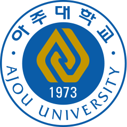
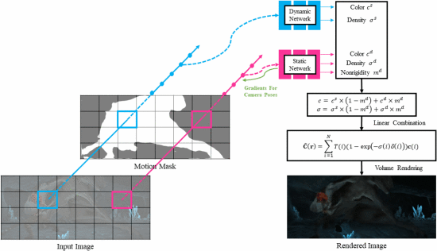
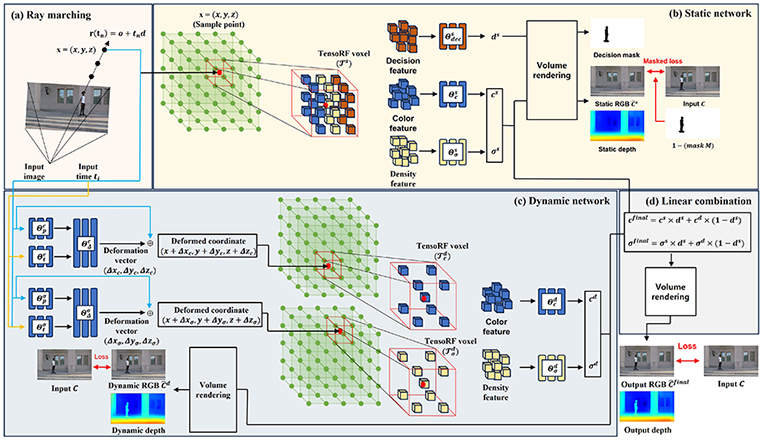
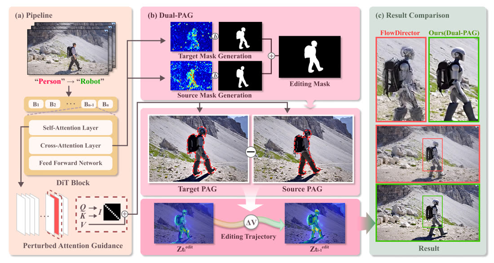
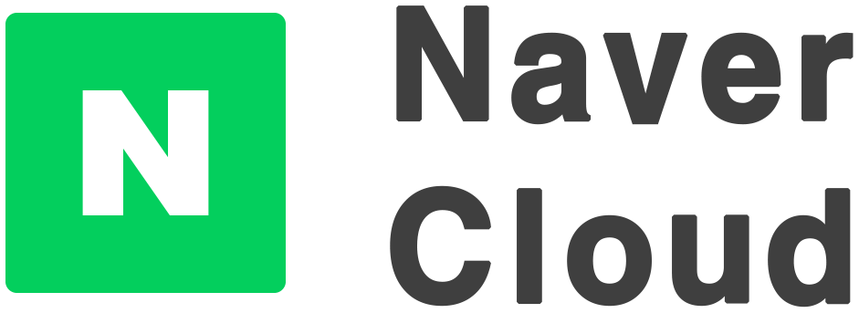
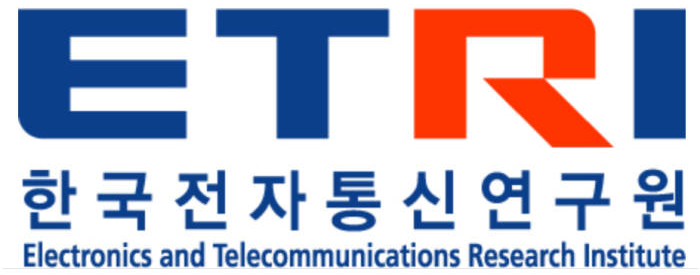

2023.03 —
Integrated M.S./Ph.D. in Electronic Engineering
Sogang University · VDSLab
AdvisorProf. Suk-Ju Kang
Integrated M.S./Ph.D. Student · VDSLab, Sogang University
I received my B.S. in Mechanical Engineering from Ajou University, and I am now an integrated M.S./Ph.D. student in Electronic Engineering at Sogang University, advised by Prof. Suk-Ju Kang.
My research has centered on reconstructing 3D/4D space with NeRF and Gaussian Splatting. I currently work on spatial AI, studying how feed-forward models come to understand spatial structure, and on world models for digital twins that supply training data and simulation for physical AI.
Degrees only. Visiting positions live under Experience
2023.03 —
Sogang University · VDSLab
AdvisorProf. Suk-Ju Kang
2016.03 — 2022.08

Ajou University
Visiting positions and internships
2026.06 — 2026.07

Purdue University · NEISLab
HostProf. Younghyun Kim
Projects I led or co-led
IEEE TMM · Submitted
Joint reconstruction of humans and the objects they interact with, in one splatting model.
IEEE TCSVT · Submitted
Monocular dynamic reconstruction that needs no SfM poses or point clouds. Static and dynamic regions are separated explicitly, and the whole pipeline drops into existing 4DGS methods.
* equal contribution · † co-corresponding author
C2
European Conference on Computer Vision (ECCV 2026)
C1

International Conference on Electronics, Information and Communications (ICEIC 2024)
J3

IEEE Transactions on Computational Imaging (TCI)
J2
IEEE Transactions on Circuits and Systems for Video Technology (TCSVT) Under Review
J1
IEEE Transactions on Multimedia (TMM) Under Review
Junior researchers I worked closely with, and the papers that came out of it
2026

MenteeJeongseon OhIntegrated M.S./Ph.D. Student
International Conference on Machine Learning (ICML 2026) F2S Workshop
Funded and industry collaborations
June 2025 —

NAVER Cloud, Korea · 참여연구원
Mar 2023 —

ETRI, Korea · 참여연구원